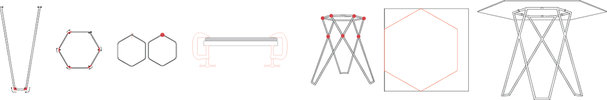
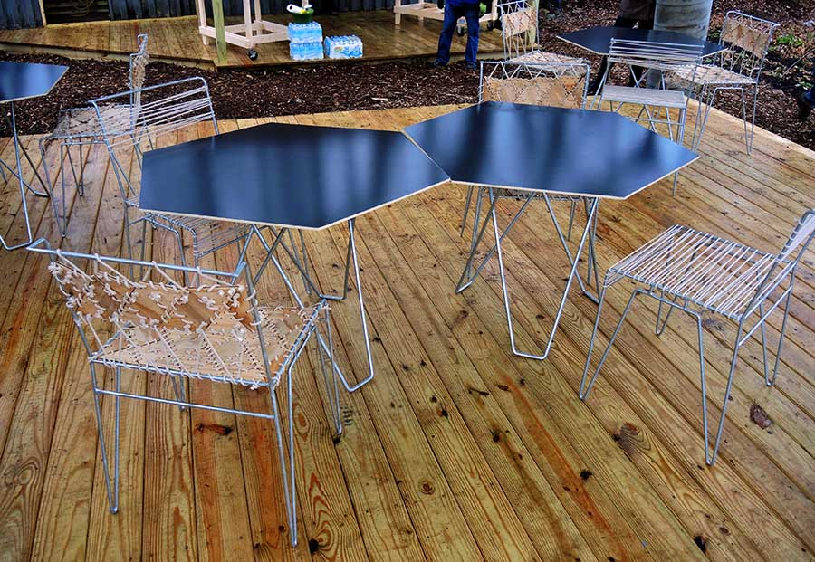

Growing Places Indy commissioned two Ball State architecture studio sections to work on a fully-realized Design-Build project deemed “GRIDfarm” on site in Indianapolis, IN. Deliverables included a rebar gridshell skinned with repurposed RCA Dome fabric, a vegetable wash station, retrofitted shipping containers, and furniture. My three-person team was responsible for six tables built from repurposed donated chalkboards and 1/2” steel rods. The challenge was to design a table that fit seamlessly into the other pieces of the project, especially the chair team’s intricate woven chair design.


After multiple design iterations, the team decided on a hexagonal shaped table top with three legs that when welded together form a strong connection while cutting back on the amount of material needed. Step 1 was to build a jig with sheet metal and small pegs. 1/2" steel rods were cut down to size - 18 longer pieces for the table legs and 6 shorter pieces for the hexagonal ring that supports the table top.


The next step was to bend the metal rods using the metal jig and a torch. After bending, the pieces had to be cut again to the right size using an abrasive saw. The hexagons had to be clamped to a metal table top and heated with the torch to level it. After learning and practicing welding skills, the team members welded the legs to the hexagonal ring with a wooden jig to hold the pieces together.


The next step was to clean up the work to that point. Angle grinders were used to remove slag from the welds, and the torch was used to smooth out the marks from the grinder. The table bases were then sent to be galvanized, returning a shiny silvery color.


The tabletops were quite challenging, as the material used were donated chalkboards. The boards were essentially two thin sheets of metal with a wooden hardboard between. The chalkboard side is lined and green, but the backside is a reflective black. This allowed for an elegantly thin black tabletop that satisfied all the requirements: facilitating the donated material, making the tables lightweight enough to be moved around the Growing Places site, and keeping the tables heavy enough to prevent theft. To prepare the tabletops, the team cut the chalkboards into the hexagonal shape with a jigsaw and metal blade. Angle grinders were used to smooth the cut metal, and lastly, the team painted the edges an almond color to match the string used on the 20 chairs.


The final step was completed on site: attaching the bases to the tabletops with pipe straps. The 6 completed tables were revealed on site on December 5th, 2014 with the other parts of the GRIDfarm project.
